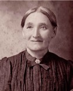

The Kleinsorge Family Tree - Family Card
The Kleinsorge Family Tree - Family Card
RATH, CasparKLEINSORGE, Johann Fredrick Anton(May 17, 1801 - Jan 3, 1864)
WIEFFEL, ElisabethKÖHNE, Maria Anna(Feb 25, 1812 - Jan 21, 1874)
m. Jun 1, 1874, Berghausen, Germany


b. Feb 19, 1849, Oedingen, Westfalen, Prussia
d. Mar 2, 1907, Westphalia, Kansas
ado.

b. Mar 7, 1849, Berghausen, Germany
d. 1931, Westphalia, Kansas
ado.
Children
RATH, Mary(Mar 20, 1875 - May 1956)
RATH, Joseph(Apr 4, 1877 - Oct 1929)
RATH, Anna(Aug 24, 1878 - Jun 14, 1956)
RATH, Elizabeth(Feb 10, 1882 - Jun 9, 1906)
RATH, John(Feb 22, 1884 - Jun 29, 1961)
RATH, Thresia(Dec 10, 1885 - Jun 22, 1908)
RATH, Anton(Feb 24, 1888 - Jan 30, 1979)
ROTH, Joseph(May 11, 1890 - Jan 25, 1980)
RATH, Bernadine(Dec 10, 1892 - Feb 2, 1985)